Ci-dessous vous est présenté une galerie avec des figures importantes du féminismes aux États-Unis
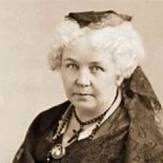
Elizabeth Cady Santon, née en 1815 et morte en 1912
C’était une autrice et une des figures les plus importantes du mouvement pour les droits des femmes.
Elle constitue notamment l’acte fondateur pour le droit des femmes aux États-Unis.
Et elle a organisé la convention de Seneca Falls en 1848, la première convention sur les droits des femmes aux États-Unis.
Elle crée avec Susan B. Anthony l’association National Woman Suffrage Association
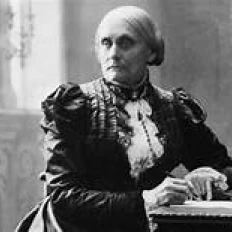
Susan Brownell Anthony, née en 1820 et morte en 1906
Elle était une militante américaine des droits civiques, elle s’est battue pour le droit de vote des femmes
aux États-Unis. Elle crée avec Elizabeth Cady Stanton l’association National Woman Suffrage Association.
Tout au long de sa vie, elle donnera des conférences aux États-Unis et en Europe pour les droits des femmes.
Elle fut arrêtée en 1872 pour avoir essayé de voter à l’élection présidentielle.
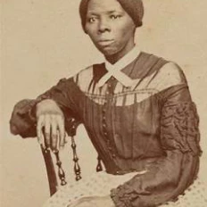
Harriet Tubman, née entre 1820 et 1825 et morte ne 1913
Ancienne esclave dans une plantation dans le maryland, c'est une militante américaine
qui lutte pour l’abolition de l’esclavage, les droits des afro-américain et féministe.
Elle est surnommée «la moise du peuple noir»
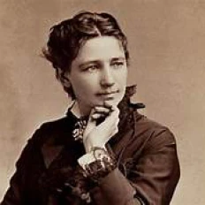
Victoria Woodhull, née en 1838 et morte en 1927
Elle fut la première femme à se présenter à la maison blanche pour les présidentielles en 1872
avec le parti qu’elle a créé “equal right party”. Elle a été aussi la première femme à parler
du droit de vote des femmes au congrès. Elle lance un journal qui parle de l’amour la prostitution
et l’avortement. Son état d’esprit choquait les féministes parmi celles les plus conservatrices.
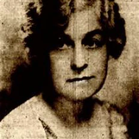
Marie Jenney Howe, née en 1870 et morte en 1934
C’était une auteure et une féministe américaine qui s’est battu pour le droit de vote des femmes.
Au cours de sa vie, elle devient une des responsables de la National American Woman Suffrage Association,
puis elle rejoint la Congressional Union, qui devient par la suite le National Woman’s Party.
Elle part ensuite à Paris pour écrire la Biographie de George Sand en 1926.
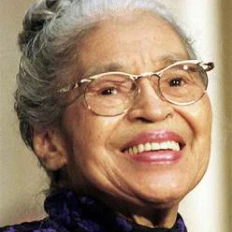
Rosa Parks, née en 1913 et morte en 2005
C’est une Afro-Américaine qui fut une figure emblématique de la lutte contre la ségrégation des afro-américains
aux États-Unis. Pour cette lutte acharnée qu’elle a mené on lui a donné un nom “mère du mouvement des droits civiques”
Rosa Parks a lutté par la suite contre la ségrégation raciale avec Martin Luther King.
Du fait de son arrestation en 1955 un mouvement féministe s’est créer qui est celui du boycott des lignes de bus.
Les femmes ne prenaient plus le bus, mais trouvaient d'autres moyens de locomotion.
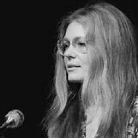
Gloria Steinem, née en en 1934 et toujours vivante actuellement
Est l'un des visages les plus marquants du féminisme américain de la deuxième vague et son activisme se poursuit encore à ce jour.
En 1971 elle crée le journal Ms Magazine qui est un journal féminin libéral qui s’éloigne
des récits sexistes des autres journaux pour femmes à cette époque.
Elle donne depuis un grand nombre d'années des conférences autour du statut social des femmes.
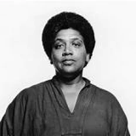
Audre Lorde, née en 1934 et morte en 1992
Elle était une auteure afro-américaine, lesbienne qui s’est battu tout au long de sa vie pour
le droit des femmes, des noires et des homosexuels. Elle publiait des poèmes notamment son premier dans le magazine Seventeen
quand elle était encore au lycée puis elle a continué à écrire des poèmes tout au long de la vie.
Elle a travaillé pour le Women’s institute for freedom of the press dans les années 70.
Son ouvrage le plus remarquable restera The cancer Journals qui décrit son chemin avec le cancer du sein qu'elle a eu.
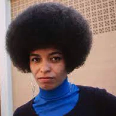
Angela Davis, née en 1944 et tojours en vie actuellement
C’est une afro-américaine. Dans les années 70 elle rejoint le mouvement d'extrême gauche nommé
les black panther et le parti communiste. Elle fut arrêtée en 1970 suite à une prise d’otage ratée.
Selon elle il y a une nécessité d’un féminisme intersectionnel avec l’intégration des autres facteurs discriminant
autre que le sexe tel que l’ethnie, l’identité sexuelle, etc.
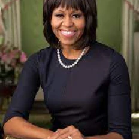
Michelle Obama, née en 1964 et tojours en vie actuellement
Elle est l’ancienne première dame des États-Unis durant les mandats de Barack Obama,
même après avoir quitté la maison blanche, elle a continué son combat pour la défense des femmes,
de la nutrition … Elle a sorti un mémoire qui parle de son parcours et elle veut que les femmes s’en inspirent.
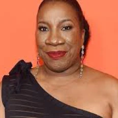
>Tarana Burke, née en 1973 et toujours en vie actuellement
C’est une afro-américaine qui a lancé le mouvement MeToo en 2006
qui est aujourd’hui utilisée par les stars pour dénoncer des abus sexuels à Hollywood
et dans d’autre domaine
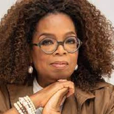
Oprah Winfrey, est née le 29 janvier 1954 et toujours en vie actuellement
C’est une actrice, critique littéraire et présentatrice télé.
Elle est vraiment engagée comme quand elle a créé une association en Afrique du Sud pour
l’éducation des jeunes filles.